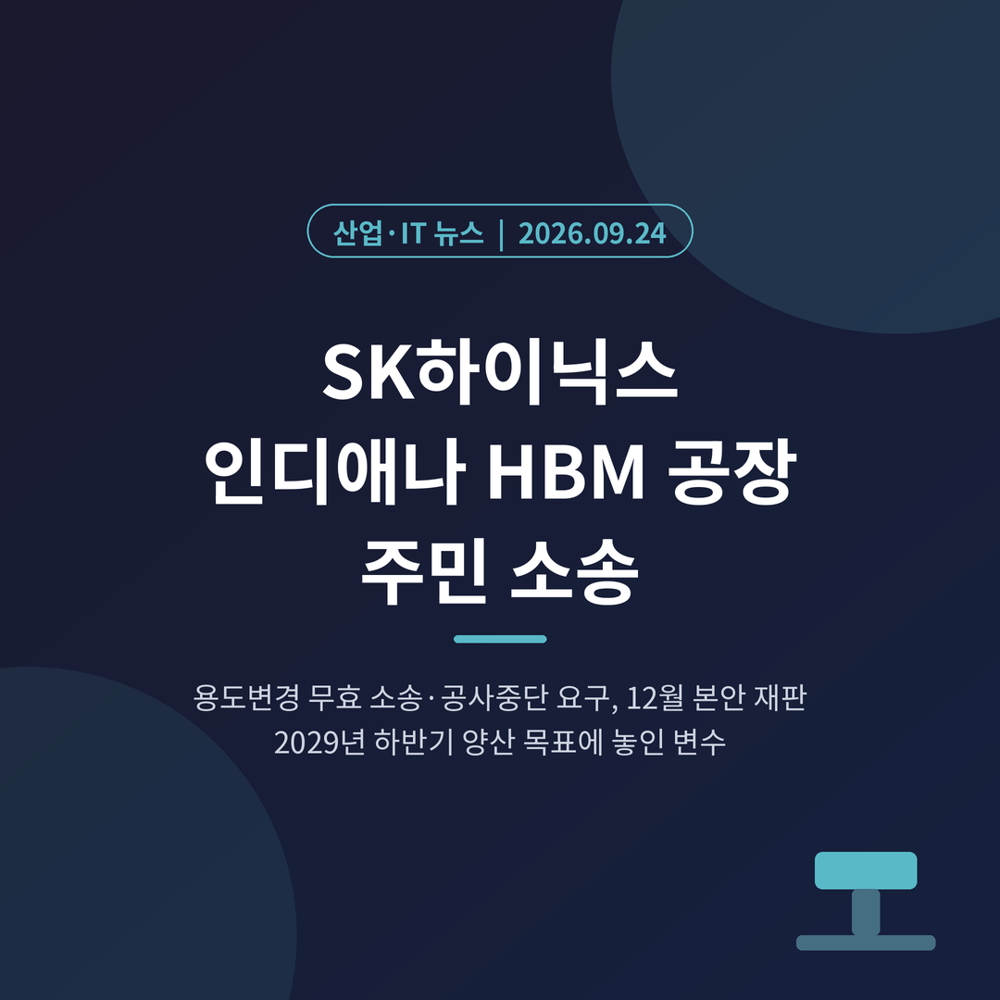
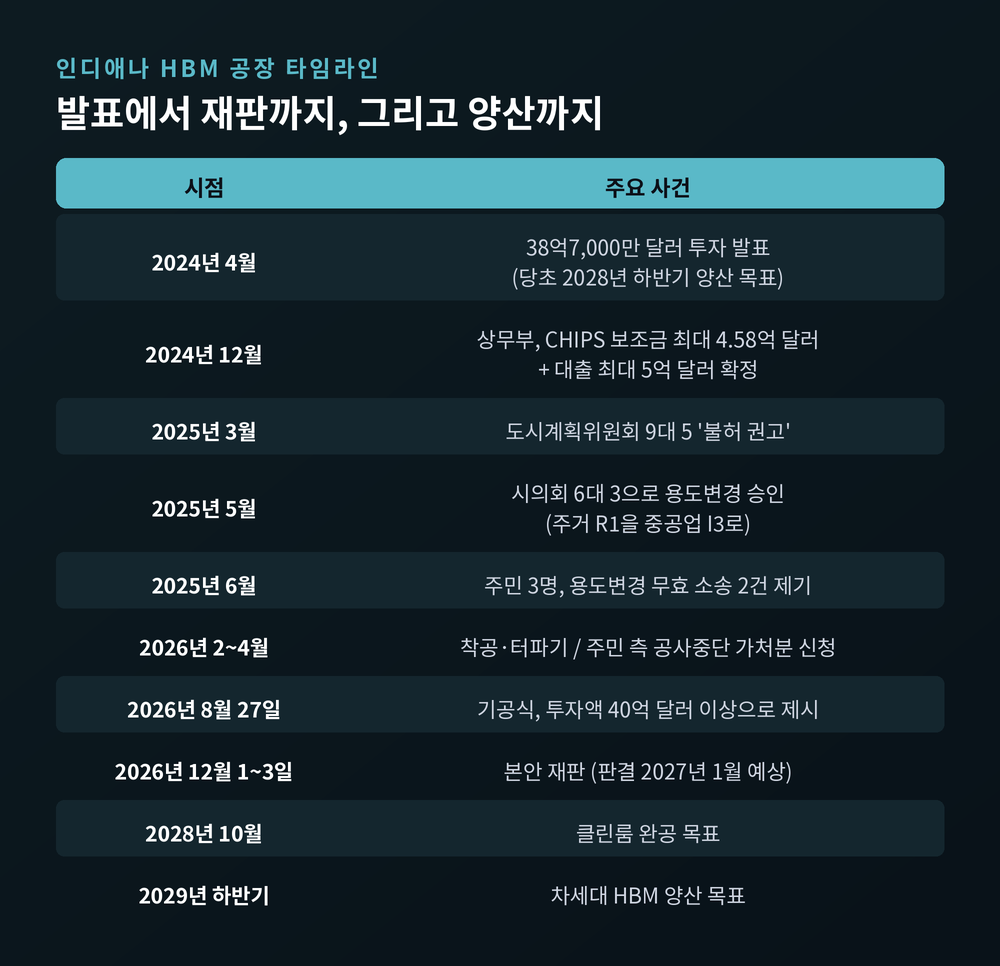
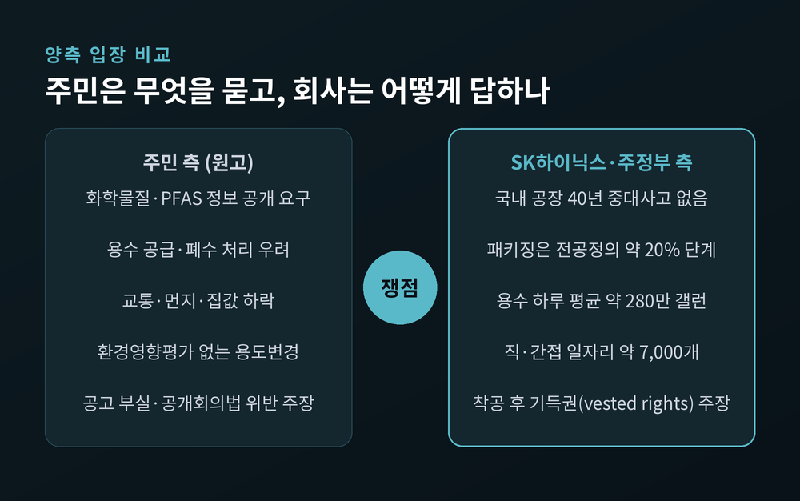
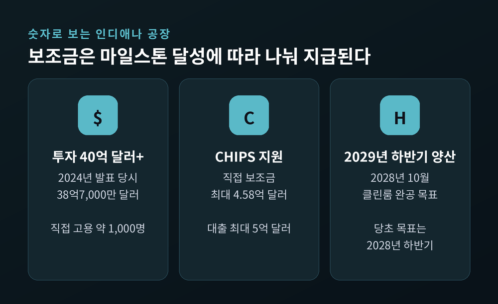
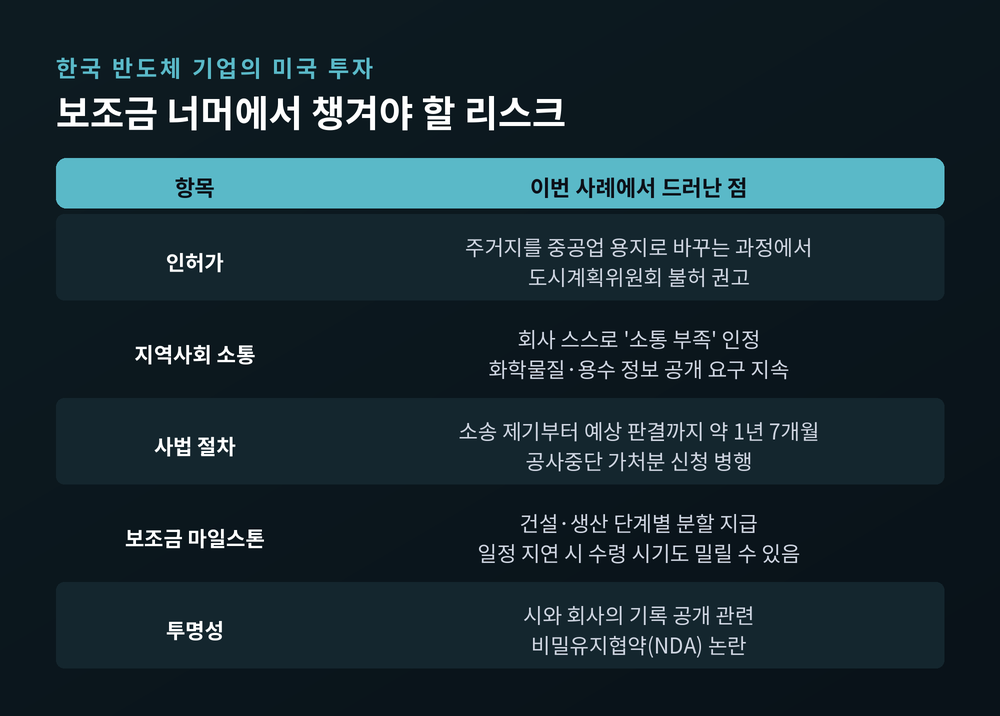
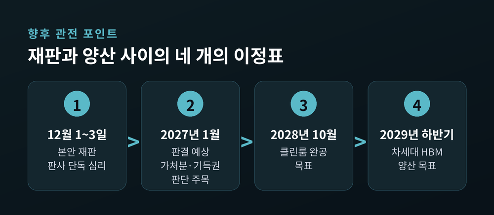

SK하이닉스 인디애나 HBM 공장 소송, 주민들이 공사 중단을 요구하는 이유

이번 글에서는 SK하이닉스의 미국 인디애나 HBM 공장이 현지 주민 소송에 휘말린 사안을 정리해 보겠습니다. 공사는 진행 중이지만, 오는 12월 부지 용도변경의 적법성을 다투는 재판이 열립니다. 무엇이 쟁점이고 어떤 의미가 있는지 차례로 짚어 보겠습니다.
세 줄 요약
- 웨스트라피엣 주민 3명이 SK하이닉스 공장 부지의 용도변경 조례를 무효로 해 달라며 소송을 냈고, 공사를 멈추는 예비적 금지명령도 신청했습니다.
- 본안 재판은 12월 1~3일로 잡혀 있고, 판사는 2027년 1월께 판결을 예상한다고 밝혔습니다.
- 공장은 2029년 하반기 차세대 HBM 양산이 목표입니다. 처음 발표 때의 2028년 하반기보다 1년가량 늦춰진 일정입니다.
무슨 일이 있었나
이투데이는 9월 22일 단독 보도로 이 소식을 전했습니다. SK하이닉스가 미국에 짓는 40억달러 규모 HBM 생산거점이 현지 법정 공방에 휘말렸다는 내용입니다.
소송은 사실 새로운 일이 아닙니다. 2025년 6월, 부지에서 약 1마일 떨어진 곳에 사는 주민들이 티피카누카운티 순회법원에 두 건의 소송을 냈습니다. 한 건은 로라 윌리엄스, 다른 한 건은 숀 새서와 칼 재니치가 원고입니다. 피고는 웨스트라피엣시, SK하이닉스, 그리고 땅을 가진 퍼듀연구재단입니다.
원고들의 요구는 분명합니다. 주거지였던 땅을 중공업 용지로 바꾼 시의회 결정을 무효로 해 달라는 것입니다. 올해 4월에는 공사를 멈춰 달라는 예비적 금지명령도 잇따라 신청했습니다.
그렇다고 공장이 멈춘 것은 아닙니다. 법원은 아직 절차에 문제가 있다고 판단하지 않았고, 공사는 계속되고 있습니다. SK하이닉스는 6월 말 미국 증권거래위원회에 낸 증권신고서에 소송 사실을 적고, 결과는 현재로서 예측하기 어렵다고 밝혔습니다.

주민들은 왜 반대하나
쟁점은 크게 두 갈래입니다. 하나는 생활과 환경, 다른 하나는 절차입니다.
먼저 생활과 환경입니다. 대상 부지는 캘버러 로드 북쪽 121에이커입니다. 원래 저밀도 주거지(R1)였던 이 땅이 중공업 용지(I3)로 바뀌었습니다. 원고들은 시의회가 여러 질문을 외면했다고 주장합니다. 도로가 늘어난 교통을 감당할 수 있는지, 집값은 어떻게 되는지, 공장에서 어떤 화학물질을 쓰는지, 물은 어디서 끌어오고 폐수는 어떻게 처리하는지 같은 질문들입니다. 환경영향평가 없이 용도를 바꿨다는 점도 문제 삼았습니다.
주민 모임에서는 과불화화합물(PFAS) 검사 요구, 물 사용량 수치가 제각각이라는 지적, 지하 대수층 오염 우려도 나왔습니다. 착공 뒤에는 대형 트럭 통행과 먼지가 늘어 주거지 성격을 잃고 있다는 호소가 더해졌습니다.
다음은 절차입니다. 원고 측은 2025년 3월 공청회 공고가 "R1에서 I3로"라는 암호 같은 코드만 적었을 뿐, 주거지가 중공업 용지로 바뀐다는 사실을 알리지 않았다고 지적합니다. 인디애나주 공개회의 관련 법을 어겼고, 시와 회사 사이에 비공개 협상이 있었다는 의혹도 제기했습니다.
결정 과정 자체도 매끄럽지 않았습니다. 2025년 3월 지역 도시계획위원회는 9대 5로 용도변경을 불허하라고 권고했습니다. 퍼듀대 반도체 분야 교수 일부도 우려를 표했습니다. 그러나 시의회는 두 달 뒤 6대 3으로 이를 승인했습니다.

회사와 주정부는 어떻게 답하나
SK하이닉스도 할 말이 있습니다. 2025년 4월 현지 매체 인터뷰에서 NK 김 부사장은 반대 여론에 매우 놀랐다며, 지역 소통이 부족했다는 점을 먼저 인정했습니다. 시간을 되돌릴 수 있다면 더 많이 소통했을 것이라는 말도 덧붙였습니다.
안전과 환경에 대해서는 구체적인 숫자로 설명했습니다. 이웅선 부사장은 이천 공장 반경 0.6마일 안에 1만 명 넘는 주민이 살고, 1983년 이후 40년간 중대 환경·안전 사고가 없었다고 밝혔습니다. 첨단 패키징은 웨이퍼를 새로 만드는 공정이 아니라 이미 만든 웨이퍼를 쌓고 잇는 공정이며, 전공정 대비 공정 단계가 20% 수준이라는 설명도 내놓았습니다. 예상 용수 사용량은 하루 평균 약 280만 갤런으로 제시했습니다.
법정에서는 더 단단한 논리를 폅니다. 허가를 받고 착공한 이상 "기득권(vested rights)"이 생겨, 설령 용도변경이 뒤집혀도 되돌릴 수 없다는 주장입니다. 앞서 원고 적격이 없다며 소송을 끝내 달라고도 요청했지만, 판사는 5월 말 이를 받아들이지 않았습니다. 세 주민이 재판까지 갈 근거는 충분하다고 본 것입니다. 다만 실제 피해를 입증할 수 있는지는 재판에서 따지게 됩니다.
주정부와 연방 정치권은 한목소리로 환영합니다. 8월 27일 기공식에서 마이크 브라운 인디애나 주지사는 이 사업이 수천 개의 좋은 일자리를 가져올 것이라고 했습니다. 토드 영 상원의원도 반도체법으로 이 투자를 가능하게 한 데 자부심을 드러냈습니다. 회사는 직·간접 일자리 약 7,000개를 약속했습니다.
왜 중요한가: 보조금과 HBM 공급망
이 공장은 SK하이닉스가 미국에 세우는 첫 HBM 생산거점입니다. 한국에서 만든 첨단 웨이퍼를 인디애나로 보내 패키징과 테스트를 거친 뒤 미국 고객사에 공급하는 구조입니다. 옆에는 고객사와 대학이 함께 쓰는 연구개발 테스트베드도 들어섭니다.
미국 정부의 기대도 큽니다. 상무부는 2024년 12월 반도체법에 따라 최대 4억5,800만 달러의 직접 보조금과 최대 5억 달러의 대출을 확정했습니다. 다만 이 돈은 한꺼번에 나오지 않습니다. 건설, 기술, 생산, 상업화 단계를 하나씩 달성할 때마다 나눠 지급됩니다. 국내 업계에서 일정 지연이 곧 보조금 지급 지연으로 이어질 수 있다는 우려가 나오는 이유입니다.

시장 상황을 보면 무게는 더 커집니다. SK하이닉스는 HBM 시장에서 매출 기준 과반 점유율을 지켜 왔습니다. 엔비디아의 차세대 플랫폼용 HBM4 물량 가운데 약 3분의 2를 SK하이닉스가 맡을 것이라는 보도도 있었습니다. 최대 고객이 있는 미국 땅에서 'Made in USA' HBM을 공급한다는 것은 공급망 안정과 통상 리스크 대응을 동시에 겨냥한 포석입니다.
일정은 이미 한 차례 밀렸습니다. 2024년 4월 처음 발표할 때 목표는 2028년 하반기 양산이었습니다. 지금은 2028년 10월 클린룸 완공, 2029년 하반기 양산입니다. 회사가 지연 이유를 소송 탓으로 설명한 적은 없습니다. 그래도 착공이 올해 2~3월에야 이뤄졌다는 점에서, 인허가 과정이 일정에 부담이 됐다는 해석은 가능합니다.
미국 현지 생산이 드러낸 리스크
이번 사안은 기술이나 자금보다 '땅과 이웃'이 변수가 될 수 있음을 보여줍니다.
예전에는 보조금 규모와 세제 혜택이 미국 투자의 핵심 계산이었습니다. 지금은 인허가, 지역 여론, 사법 절차까지 일정표에 넣어야 합니다. 미국에서는 주민이 용도변경 같은 행정 결정을 법정으로 끌고 갈 수 있고, 판결이 나오기까지 1년 반 넘게 걸리기도 합니다. 회사 관련 시 기록의 공개 청구를 두고 시와 회사가 비밀유지협약을 맺은 일도 투명성 논란을 키웠습니다.

업계에서는 투자 규모만큼이나 계획한 시점에 공장을 돌릴 수 있는 환경이 중요해졌다고 말합니다. 건설사업관리를 맡은 한미글로벌이 9월 21일 공개한 일정도 2028년 클린룸 완공이 기준입니다. 한 번 더 밀리면 고객사 제품 로드맵과 어긋날 수 있습니다.
한계도 분명히 적어 두겠습니다. 법원은 아직 어떤 결론도 내리지 않았습니다. 원고가 이긴다고 해서 공사 중인 공장이 곧바로 멈춘다는 보장도 없습니다. 기득권 법리가 어떻게 적용될지는 재판을 지켜봐야 합니다.
앞으로의 관전 포인트
첫째, 12월 1~3일 재판입니다. 배심원 없이 판사가 판단하는 재판이며, 판결은 2027년 1월께로 예상됩니다.
둘째, 금지명령 신청의 향방입니다. 법원이 공사 중단을 받아들일지, 기득권 주장을 인정할지가 일정의 분수령이 됩니다.
셋째, 지역사회와의 관계 회복입니다. 퍼듀대와 맺은 연구 협력, 1,000여 명 직접 고용 같은 약속이 실제로 주민 신뢰로 이어질지가 장기 과제입니다.

정리하면 이렇습니다.
인디애나 공장은 한미 반도체 협력의 상징이자, 해외 공장이 부딪힐 수 있는 현실적 벽을 동시에 보여주는 사례입니다. 주민들은 알 권리와 생활 환경을 말하고, 회사와 주정부는 안전 이력과 일자리를 말합니다. 어느 한쪽만의 이야기로 정리하기 어렵습니다.
"공장은 허가로 짓지만, 가동은 이웃의 신뢰로 한다."
이 교훈이 SK하이닉스만의 것이냐고 물으신다면, 미국에 공장을 짓는 모든 한국 기업의 것이라고 답하겠습니다.